Next: Tesseral Harmonics Up: McPhase USERS MANUAL Previous: ErNiBC - single ion Contents Index
For historical reasons, crystal field parameters (effectively the radial matrix elements of the crystal field
interactions) may be expressed in two different "normalisation", which we shall call Stevens and
Wybourne. Stevens [57,25] initially expressed the radial parts of the crystal field interaction
in terms of angular momentum operators 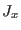, 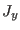,  . He did this by taking the Cartesian expressions for
the tesseral harmonic functions (see Appendix F), and replacing all instances of the coordinates
. He did this by taking the Cartesian expressions for
the tesseral harmonic functions (see Appendix F), and replacing all instances of the coordinates
 ,
,  , and
, and  with , and
with , and  and allowing for the commutation relations of the angular
momentum operators, but without considering the normalisation condition of these functions and hence are missing
the prefactors before the square brackets in the expressions in Appendix F. We denote these
prefactors 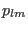. The Stevens crystal field Hamiltonian is thus
and allowing for the commutation relations of the angular
momentum operators, but without considering the normalisation condition of these functions and hence are missing
the prefactors before the square brackets in the expressions in Appendix F. We denote these
prefactors 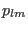. The Stevens crystal field Hamiltonian is thus
where the product
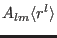 is commonly taken in the literature as the crystal
field parameter, because the factorisation into an intrinsic parameter 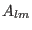 and the expectation value of
the radial wavefunction
 is derived from the point charge model and is not generally
valid. Alternatively, the product
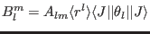 is
also commonly used, particularly in the neutron scattering literature.
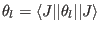 are the Stevens factors: for 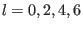 these correspond to the number of electrons in the unfilled shell
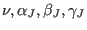, respectively.
is derived from the point charge model and is not generally
valid. Alternatively, the product
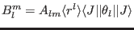 is
also commonly used, particularly in the neutron scattering literature.
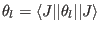 are the Stevens factors: for 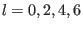 these correspond to the number of electrons in the unfilled shell
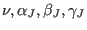, respectively.
Wybourne [47] and subsequent co-authors on the other hand chose to use the tensor operators 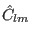 which transform in the same way as the functions 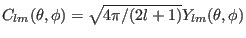, where 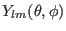 are the spherical harmonic functions, to describe the crystal field. Thus the angular-dependent part of the crystal field matrix elements used by Wybourne differed from that of Stevens by the factor 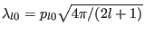 and 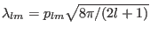 for 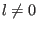. The crystal field Hamiltonian used by Wybourne is thus (in our notation)
The disadvantage of the Wybourne approach is that one requires imaginary crystal field parameters, because the tensor operators are not Hermitian. In McPhase, we have instead chosen to use slightly different tensor operators 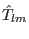, which are the Hermitian combinations of the ,
giving the Hamiltonian
Our  parameters therefore have the same normalisation as the Wybourne parameters but will be real.
parameters therefore have the same normalisation as the Wybourne parameters but will be real.
In summary:
|